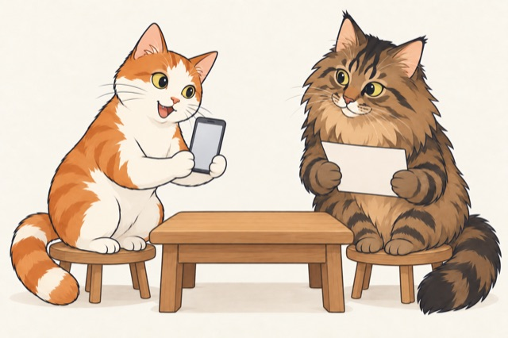

反馈要补齐什么？
复现条件 · 期望表现 · 实际表现 · 截图或其他依据
先把问题说清，再决定改哪一处
图里的空白手机与卡片是任务道具；实际页面与反馈由课件另外展示
新增：1024 与 640 的清晰度对照、原生分辨率 Probe →
解释反馈、核对依据、递交问题记录，让角色的动作参与章节任务
2026-10-07 · 讲师已偏好上一组卡通版，本组三个新动作待比较 · 独立插画试验，未应用到正式课件

复现条件 · 期望表现 · 实际表现 · 截图或其他依据
先把问题说清，再决定改哪一处
图里的空白手机与卡片是任务道具；实际页面与反馈由课件另外展示
观察点：两前爪共同托手机；两后脚落在凳面，尾巴单独可辨。修订是否减轻了初稿的拇指感，仍待讲师比较
角色设定 · 新会话续做约定 · 所有版本与 Prompt